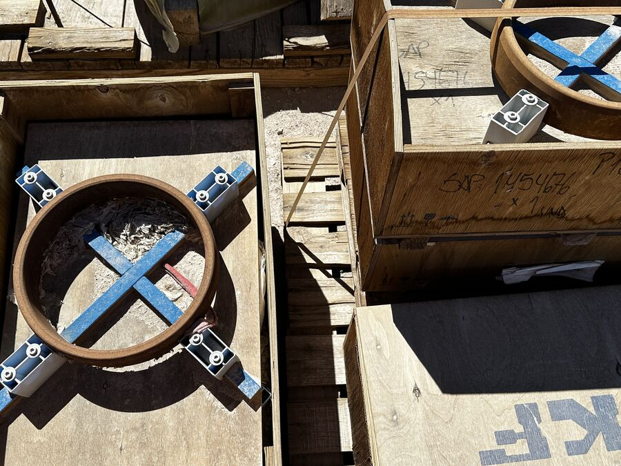
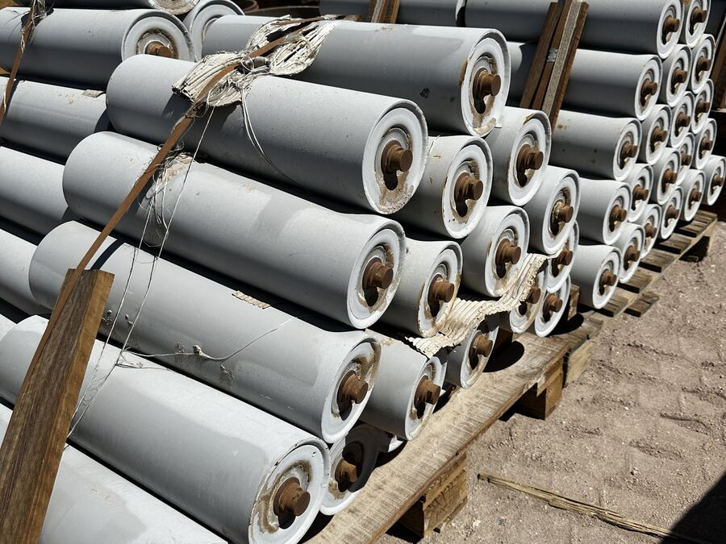
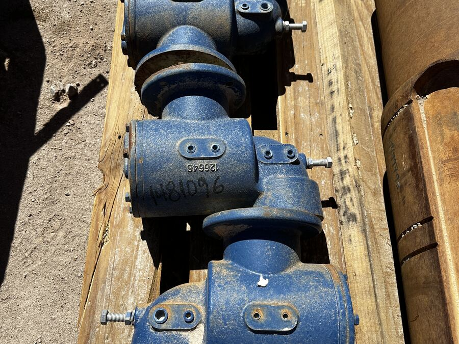
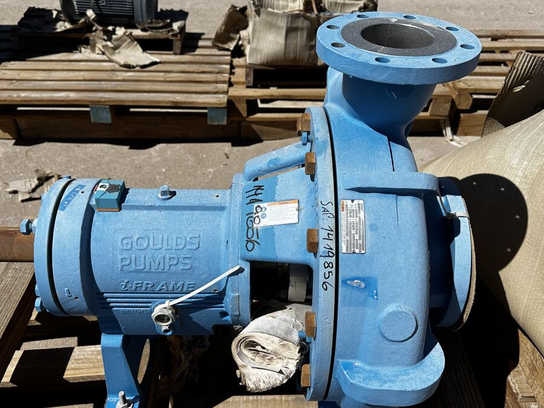
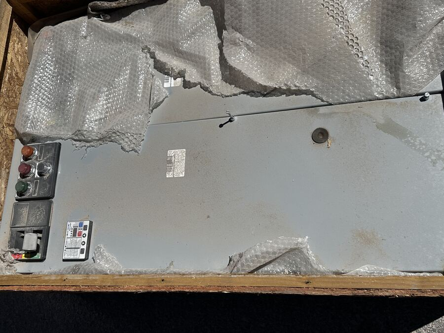
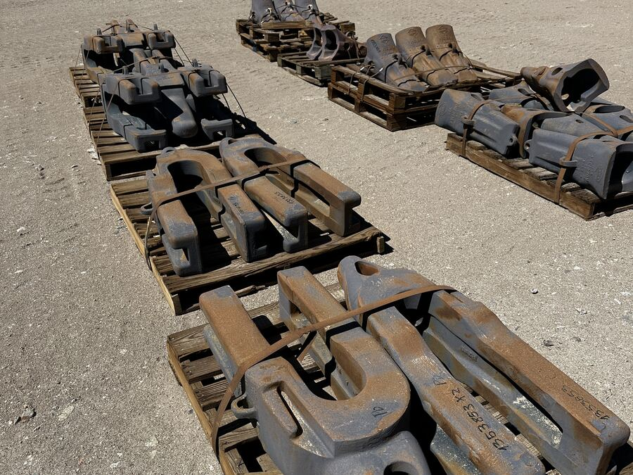

Rodamientos y sellos
SKF · sellos y soportesRodamientos de distintas medidas, anillos de sello y elementos de apoyo. Marcas industriales de primera línea, mayoritariamente en su embalaje original.
Pre-registrarme por WhatsAppRodamientos y sellos, polines y transportadores, válvulas, bombas, material eléctrico y piezas de desgaste. Remate 100% online: participas desde cualquier parte de Chile o del extranjero, sin viajar al norte.
Quiero quedar pre-registrado Nos escribes por WhatsApp, quedas en la lista y te avisamos primero apenas se abra la inscripción.Seis familias concentran la mayor parte del volumen. Toca la que te interesa, quedas pre-registrado en esa categoría y te avisamos primero cuando haya detalle de esos lotes.

Rodamientos de distintas medidas, anillos de sello y elementos de apoyo. Marcas industriales de primera línea, mayoritariamente en su embalaje original.
Pre-registrarme por WhatsApp
Polines de distintas medidas y piezas de transporte de mineral. La familia de mayor rotación y ticket más accesible del remate.
Pre-registrarme por WhatsApp
Válvulas de cuchillo DeZurik, válvulas de proceso y sus actuadores. Piezas de alto costo de reposición para plantas concentradoras e industria pesada.
Pre-registrarme por WhatsApp
Bombas centrífugas y de proceso, equipos de filtración y componentes de manejo de fluidos, incluidos equipos de Planta de Ácido.
Pre-registrarme por WhatsApp
Tableros eléctricos, módulos de distribución de potencia, variadores e instrumentación de control, buena parte sin uso y en embalaje de fábrica.
Pre-registrarme por WhatsApp
Dientes y adaptadores GET Hensley, elementos de desgaste y piezas de chancado ThyssenKrupp. Lotes que se revisan uno a uno con el interesado.
Pre-registrarme por WhatsAppFamilias con menor volumen pero alto valor unitario. Se revisan caso a caso: escríbenos y quedas pre-registrado por la que te interese.
Los neumáticos Titan 59/80R63 E-3 incluidos en este remate NO son aptos como repuesto ni para uso vehicular. Fueron retirados de circulación y se ofrecen exclusivamente para aplicaciones secundarias, sin rodaje ni montaje en equipo minero.
Usos válidos para los que se ofrecen:
El remate es online y empieza por el pre-registro: te tomas un minuto ahora y quedas primero en la fila. Si ya participaste en el remate de agosto, es la misma plataforma y tu cuenta sigue vigente.
Nos escribes por WhatsApp y nos dices qué familia de repuestos te interesa. Ahí quedas en la lista.
Apenas se abre la inscripción, los pre-registrados son los primeros en enterarse.
Creas o reactivas tu cuenta en la plataforma, te inscribes y constituyes la garantía indicada.
Ofertas online en tiempo real. Si adjudicas, coordinamos pago, documentación y retiro.
Lo que más nos preguntan sobre este remate.
El remate se realiza el miércoles 30 de septiembre de 2026, en modalidad 100% online. La hora exacta está por confirmar: si te pre-registras por WhatsApp, te avisamos apenas quede definida.
Es dejar tu contacto y la familia de repuestos que te interesa antes de que se abra la inscripción formal. Nos escribes por WhatsApp al +56 9 3401 1060 y quedas en la lista: los pre-registrados son los primeros en recibir el aviso cuando la inscripción se abre y cuando se confirma la hora del remate. No tiene costo ni te obliga a nada.
Repuestos y activos industriales de Codelco División Ministro Hales y División Radomiro Tomic, en Calama. Las familias principales son: rodamientos y sellos, polines y transportadores, válvulas y actuación, bombas y manejo de fluidos, material eléctrico y de control, y piezas de desgaste y GET. También hay barras de perforación, equipos de planta de Tostación, elementos de transmisión y neumáticos OTR fuera de uso para aplicaciones secundarias.
No. El remate es online: te registras, te inscribes y pujas desde tu computador o celular, desde cualquier parte de Chile o del extranjero. Solo se coordina presencia en terreno para el retiro de los bienes adjudicados, o para la visita a terreno si quieres inspeccionar antes.
La comisión es de 12% + IVA sobre el valor de adjudicación. Prelco opera bajo un esquema de costo fijo cero: no hay cargos por publicación, fotografía ni difusión.
Sí. Se coordina una visita a terreno en las instalaciones donde están los activos. La fecha se informa a los pre-registrados apenas queda definida. Además, cada lote se documenta con fotografías y ficha técnica.
No. Los neumáticos Titan 59/80R63 E-3 fueron retirados de circulación y no son aptos como repuesto ni para uso vehicular. Se ofrecen únicamente para aplicaciones secundarias: defensas de embarcaciones, guías de cableado, barreras de contención, obras civiles y protección de infraestructura.
Cada categoría de esta página tiene un botón que abre WhatsApp con el mensaje ya escrito. También puedes escribir directamente al +56 9 3401 1060 indicando qué familia de repuestos te interesa.
Prelco es una empresa chilena de gestión y enajenación de activos industriales, especializada en minería e industria. Convierte activos detenidos, obsoletos o subutilizados en capital líquido mediante remates y venta directa, con procesos trazables y auditables. Sitio oficial: www.prelco.cl
Déjanos tu contacto por WhatsApp y quedas pre-registrado. Eres de los primeros en saber cuándo se abre la inscripción. Sin costo ni compromiso.
Quiero quedar pre-registrado